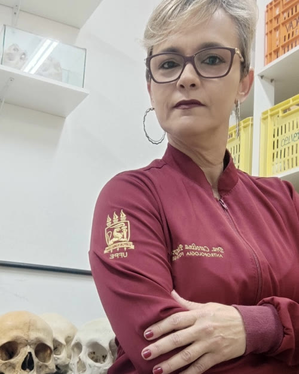

Coordenação
Carolina Peixoto Magalhães
Professora associada de Anatomia. Pesquisa osteologia forense e determinação do perfil biológico de ossadas humanas.
- DoutoradoNutrição, UFPE
- MestradoMorfologia, UFPE
- GraduaçãoEnfermagem, UFPB
Curadora da Coleção de Ossos Contemporâneos e líder do grupo de pesquisa Estudos em Antropologia e Osteologia Forense.